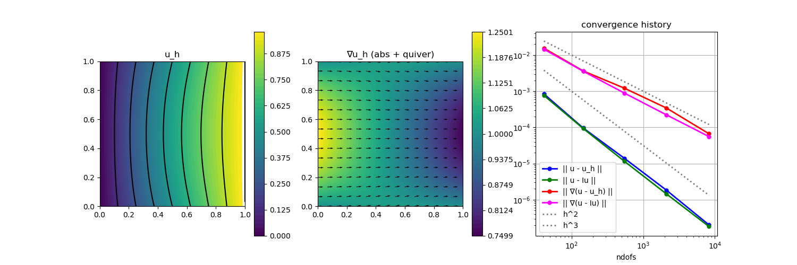

204 : Reaction-Convection-Diffusion-Problem SUPG 2D
This example is almost similar to the last example and also computes the solution of some convection-diffusion problem
\[-\nu \Delta u + \mathbf{\beta} \cdot \nabla u + \alpha u = f \quad \text{in } \Omega\]
with some diffusion coefficient $\nu$, some vector-valued function $\mathbf{\beta}$, some scalar-valued function $\alpha$ and inhomogeneous Dirichlet boundary data.
We prescribe an analytic solution with $\mathbf{\beta} := (1,0)$ and $\alpha = 0.1$ and check the L2 and H1 error convergence of the method on a series of uniformly refined meshes. We also compare with the error of a simple nodal interpolation and plot the solution and the norm of its gradient.
For small $\nu$, the convection term dominates and pollutes the accuracy of the method. This time a SUPG stabilisation is added to improve things.
module Example204_ReactionConvectionDiffusionSUPG2D
using GradientRobustMultiPhysics
using ExtendableGrids
using GridVisualize
# coefficient functions
const β = DataFunction([1,0]; name = "β")
const α = DataFunction([0.1]; name = "α")
# problem data and expected exact solution
function exact_solution!(result,x)
result[1] = x[1]*x[2]*(x[1]-1)*(x[2]-1) + x[1]
end
function exact_solution_rhs!(ν)
eval_alpha = zeros(Float64,1)
eval_beta = zeros(Float64,2)
function closure(result,x)
# diffusion part
result[1] = -ν*(2*x[2]*(x[2]-1) + 2*x[1]*(x[1]-1))
# convection part (beta * grad(u))
eval_data!(eval_beta, β, x, 0)
result[1] += eval_beta[1] * (x[2]*(2*x[1]-1)*(x[2]-1) + 1)
result[1] += eval_beta[2] * (x[1]*(2*x[2]-1)*(x[1]-1))
# reaction part (alpha*u)
eval_data!(eval_alpha, α, x, 0)
result[1] += eval_alpha[1] * (x[1]*x[2]*(x[1]-1)*(x[2]-1) + x[1])
return nothing
end
end
# custom bilinearform that can assemble the full PDE operator
# ν(∇u,∇v) + (αu + β⋅∇u, v)
function ReactionConvectionDiffusionOperator(α, β, ν)
eval_alpha = zeros(Float64,1)
eval_beta = zeros(Float64,2)
function action_kernel!(result, input, x)
# input = [u_h,∇u_h] as a vector of length 3
eval_data!(eval_beta, β, x, 0)
eval_data!(eval_alpha, α, x, 0)
result[1] = eval_alpha[1] * input[1] + eval_beta[1] * input[2] + eval_beta[2] * input[3]
result[2] = ν * input[2]
result[3] = ν * input[3]
# result will be multiplied with [v_h,∇v_h]
return nothing
end
action = Action(action_kernel!, [3,3]; dependencies = "X", bonus_quadorder = max(α.quadorder,β.quadorder))
return BilinearForm([OperatorPair{Identity,Gradient},OperatorPair{Identity,Gradient}], action; name = "ν(∇u,∇v) + (αu + β⋅∇u, v)", transposed_assembly = true)
end
# function that provides the SUPG left-hand side operator
# τ (h^2 (-ν Δu + αu + β⋅∇u), β⋅∇v)
function SUPGOperator_LHS(α, β, ν, τ, xCellDiameters)
eval_alpha = zeros(Float64,1)
eval_beta = zeros(Float64,2)
function action_kernel!(result, input, x, item)
# input = [u_h,∇u_h,Δu_h] as a vector of length 4
eval_data!(eval_beta, β, x, 0)
eval_data!(eval_alpha, α, x, 0)
# compute residual -νΔu_h + (β⋅∇)u_h + αu_h
result[1] = - ν * input[4] + eval_alpha[1] * input[1] + eval_beta[1] * input[2] + eval_beta[2] * input[3]
# multiply stabilisation factor
result[1] *= τ * xCellDiameters[item[1]]^2
# compute coefficients for ∇ eval of test function v_h
result[1] = result[1] * eval_beta[1] # will be multiplied with ∇v_h[1]
result[2] = result[1] * eval_beta[2] # will be multiplied with ∇v_h[2]
return nothing
end
action = Action(action_kernel!, [2,4]; dependencies = "XI", bonus_quadorder = max(α.quadorder,β.quadorder))
return BilinearForm([OperatorTriple{Identity,Gradient,Laplacian},Gradient], action; name = "τ (h^2 (-ν Δu + αu + β⋅∇u), β⋅∇v)", transposed_assembly = true)
end
# function that provides the SUPG right-hand side operator
# τ (h^2 f, β⋅∇v)
function SUPGOperator_RHS(f, β, τ, xCellDiameters)
eval_f = zeros(Float64,1)
eval_beta = zeros(Float64,2)
function action_kernel!(result, input, x, item)
# input = [v,∇v] as a vector of length 3
eval_data!(eval_beta, β, x, 0)
eval_data!(eval_f, f, x, 0)
# compute f times (β⋅∇)v_h
result[1] = eval_f[1] * (input[1] * eval_beta[1] + input[2] * eval_beta[2])
# multiply stabilisation factor
result[1] *= τ * xCellDiameters[item[1]]^2
return nothing
end
action = Action(action_kernel!, [1,2]; dependencies = "XI", bonus_quadorder = max(f.quadorder,β.quadorder))
return RhsOperator(Gradient, action; name = "τ (h^2 f, β⋅∇v)")
end
# the SUPG stabilisation is weighted by powers of the cell diameter
# so we need a function that computes them
function getCellDiameters(xgrid)
xCellFaces = xgrid[CellFaces]
xFaceVolumes = xgrid[FaceVolumes]
xCellDiameters = zeros(Float64, num_sources(xCellFaces))
for cell = 1 : length(xCellDiameters)
xCellDiameters[cell] = maximum(xFaceVolumes[xCellFaces[:,cell]])
end
return xCellDiameters
end
# everything is wrapped in a main function
function main(; verbosity = 0, Plotter = nothing, ν = 1e-5, τ = 10, nlevels = 5, order = 2)
# set log level
set_verbosity(verbosity)
# load initial mesh
xgrid = grid_unitsquare(Triangle2D)
# negotiate data functions to the package
u = DataFunction(exact_solution!, [1,2]; name = "u", dependencies = "X", quadorder = 4)
∇u = ∇(u)
f = DataFunction(exact_solution_rhs!(ν), [1,2]; name = "f", dependencies = "X", quadorder = 5)
# set finite element type according to chosen order
FEType = H1Pk{1,2,order}
# create PDE description and assign operator and data
Problem = PDEDescription("reaction-convection-diffusion problem")
add_unknown!(Problem; unknown_name = "u", equation_name = "reaction-convection-diffusion equation")
add_operator!(Problem, [1,1], ReactionConvectionDiffusionOperator(α,β,ν))
add_rhsdata!(Problem, 1, RhsOperator(Identity, f))
add_boundarydata!(Problem, 1, [1,2,3,4], BestapproxDirichletBoundary; data = u)
# add SUPG stabilisation and remember operator positions
if τ > 0
xCellDiameters = getCellDiameters(xgrid)
supg_id = add_operator!(Problem, [1,1], SUPGOperator_LHS(α,β,ν,τ,xCellDiameters))
supg_id2 = add_rhsdata!(Problem, 1, SUPGOperator_RHS(f,β,τ,xCellDiameters))
end
# finally we have a look at the defined problem
@show Problem
# define ItemIntegrators for L2/H1 error computation and some arrays to store the errors
L2Error = L2ErrorIntegrator(Float64, u, Identity)
H1Error = L2ErrorIntegrator(Float64, ∇u, Gradient)
Results = zeros(Float64,nlevels,4); NDofs = zeros(Int,nlevels)
# refinement loop over levels
Solution = nothing
for level = 1 : nlevels
# uniform mesh refinement
xgrid = uniform_refine(xgrid)
# update SUPG operator (with updated CellDiameters)
if τ > 0
xCellDiameters = getCellDiameters(xgrid)
replace_operator!(Problem, [1,1], supg_id, SUPGOperator_LHS(α,β,ν,τ,xCellDiameters))
replace_rhsdata!(Problem, 1, supg_id2, SUPGOperator_RHS(f,β,τ,xCellDiameters))
end
# generate FESpace and solution vector
FES = FESpace{FEType}(xgrid)
Solution = FEVector("u_h",FES)
# solve PDE
solve!(Solution, Problem)
# interpolate (just for comparison)
Interpolation = FEVector("I(u)",FES)
interpolate!(Interpolation[1], u)
# compute L2 and H1 errors and save data
NDofs[level] = length(Solution.entries)
Results[level,1] = sqrt(evaluate(L2Error,Solution[1]))
Results[level,2] = sqrt(evaluate(L2Error,Interpolation[1]))
Results[level,3] = sqrt(evaluate(H1Error,Solution[1]))
Results[level,4] = sqrt(evaluate(H1Error,Interpolation[1]))
end
# plot
p = GridVisualizer(; Plotter = Plotter, layout = (1,3), clear = true, resolution = (1500,500))
scalarplot!(p[1,1], xgrid, view(nodevalues(Solution[1]),1,:), levels = 7, title = "u_h")
scalarplot!(p[1,2], xgrid, view(nodevalues(Solution[1], Gradient; abs = true),1,:), levels = 0, colorbarticks = 9, title = "∇u_h (abs + quiver)")
vectorplot!(p[1,2], xgrid, evaluate(PointEvaluator(Solution[1], Gradient)), vscale = 0.8, clear = false)
convergencehistory!(p[1,3], NDofs, Results; add_h_powers = [2,3], X_to_h = X -> X.^(-1/2), legend = :lb, fontsize = 20, ylabels = ["|| u - u_h ||", "|| u - Iu ||", "|| ∇(u - u_h) ||", "|| ∇(u - Iu) ||"])
# print convergence history
print_convergencehistory(NDofs, Results; X_to_h = X -> X.^(-1/2), ylabels = ["|| u - u_h ||", "|| u - Iu ||", "|| ∇(u - u_h) ||", "|| ∇(u - Iu) ||"])
end
endThis page was generated using Literate.jl.
Default output:
julia> Example204_ReactionConvectionDiffusionSUPG2D.main()
PDE-DESCRIPTION
===============
system name = reaction-convection-diffusion problem
id | unknown name / equation name
[1] | u / reaction-convection-diffusion equation
LHS block | PDEOperator(s)
[1,1] | ν(∇u,∇v) + (αu + β⋅∇u, v) (APT = BilinearForm, AT = ON_CELLS, regions = [0])
| τ (h^2 (-ν Δu + αu + β⋅∇u), β⋅∇v) (APT = BilinearForm, AT = ON_CELLS, regions = [0])
RHS block | PDEOperator(s)
[1] | (f, id(v)) (APT = LinearForm, AT = ON_CELLS, regions = [0])
| τ (h^2 f, β⋅∇v) (APT = LinearForm, AT = ON_CELLS, regions = [0])
BoundaryOperator[1] : BestapproxDirichletBoundary -> [1, 2, 3, 4]
Problem =
ndofs | || u - u_h || order | || u - Iu || order | || ∇(u - u_h) || order | || ∇(u - Iu) || order |
============|=============================|=============================|=============================|=============================|
41 | 2.50402e-02 0.000 | 7.66225e-04 0.000 | 1.13110e-01 0.000 | 1.45087e-02 0.000 |
145 | 2.39138e-02 0.073 | 9.34178e-05 3.332 | 1.14142e-01 -0.014 | 3.57540e-03 2.218 |
545 | 1.60663e-02 0.601 | 1.16023e-05 3.151 | 9.30820e-02 0.308 | 8.90584e-04 2.100 |
2113 | 5.42586e-03 1.602 | 1.44793e-06 3.072 | 4.74286e-02 0.995 | 2.22441e-04 2.047 |
8321 | 1.44894e-03 1.927 | 1.80918e-07 3.035 | 2.10716e-02 1.184 | 5.55975e-05 2.023 |